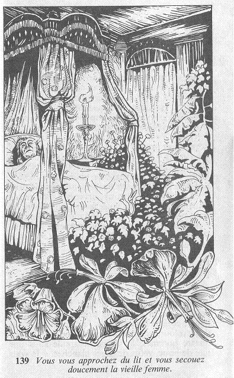

Vous vous approchez du lit et vous secouez doucement la vieille femme.  Mais à peine avez-vous mis la main sur elle que vous faites un saut en arrière : la peau blanchâtre que vous venez de toucher est aussi froide que la pierre ! Vous ajoutez 2 points à votre total de PEUR pour la frayeur qui vient d'être la vôtre, et si vous êtes encore en vie, vous percevez un long gémissement provenant de cet être dont les paupières commencent à s'ouvrir, découvrant des yeux livides qui fixent le plafond. Allez-vous attendre, pour voir s'il est possible de parler à cette femme, ou pensez-vous qu'il est plus prudent de regagner le plus vite que vous le pourrez le corridor ?